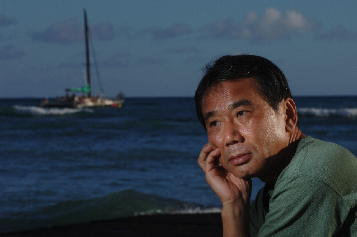

첨부된 사진만 봐도 간단한 이유를 알 수 있는데요. 바로 복잡성 때문입니다. 트랙이 위 스크린샷보다 많은 경우에는 더 복잡합니다. 혹, 믹싱이 끝난 트랙은 건드리지 않고 그냥 마스터 트랙만 건드리면 되지 않느냐고 이야기할 수도 있겠지만, 직접 해보시면 그리 되지 않는다는 것을 알 수 있을 것입니다. 마스터링 하면서 소리가 영마음에 들지 않으면 믹싱 작업한 트랙을 자꾸 만지작 거리게 되고 그러다보면 전체 밸런스가 무너지기도 하고 뭐가 뭔지 점점 모르게 되는 경우가 많습니다.
그러므로 믹싱과 마스터링 과정을 정확히 분리하여 작업을 진행하는 것이 혼동을 막을 수 있는 방법입니다. 믹싱이 끝난 파일은 바운스를 통해서 파일로 익스포트 한 후 새로운 프로젝트를 만들어서 전체 오디오 파일을 import하여 마스터링 작업을 진행하시길 바랍니다.
